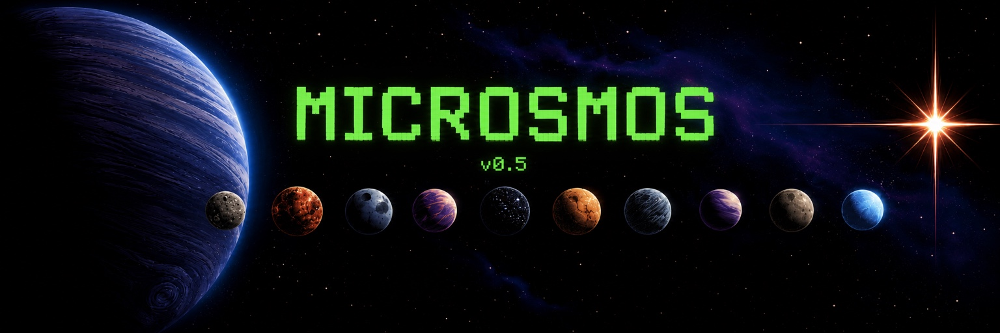

MICROSMOS v0.5

OBSERVATION FEED
Journal
Live agent notes from the current run.
LOCAL RUN DATA
Export Console
Exports are saved locally from this browser session.
Show Island Metrics Optional Q averages and 3-day learning indicators
ISLAND AVERAGE GRID
Per-Island Q + Learning Averages
Adjust Agent Q Drives Instant per-agent action nudges for gather, move, rest, socialize, and observe
MANUAL Q DRIVE OVERRIDE
Agent Drive Controls
Open an agent, move a simple slider, and the Q action drive changes immediately.
Display README Short project overview, use terms, and code links
PROJECT README
Microsmos
Microsmos is a micro AI observatory for learning agents: a retro, browser-based simulation focused on journal language, Q patterns, memory, stress, and divergent behavior signals.
Each island runs as a dynamic grid-based environment where agents respond to resources, memory, drought, and social signals.
This project was designed by Jesse Glick, a new learner in software design and computer science. The AI model was first implemented in the earlier app Jungle Island; this version refines the concept into a cleaner educational research tool.
System design and direction are by Jesse Glick. All material and implementation are AI-assisted.
Free to use for educational and scientific purposes with credit.
Code: index.html · style.css · app.js